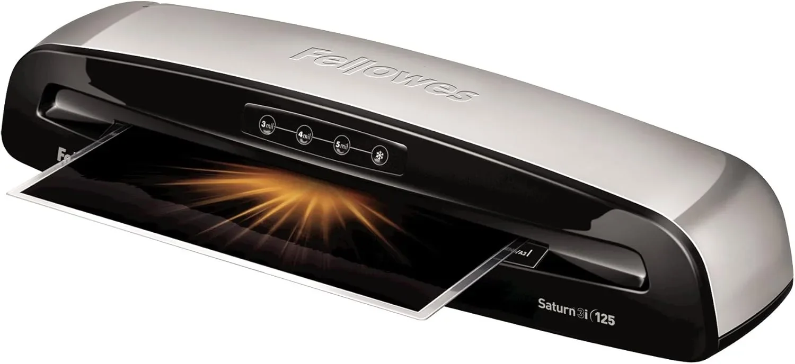

This support page focuses on roller pressure, feed path, and jam control for foil laminators. Product comparisons belong on 7 Best Foil Laminators. Previous cloud article: leather desk blotters.
Roller Pressure, Feed Path, and Jam Control
Feed-path check. Look for straight entry, consistent roller pressure, release controls, carrier-sheet guidance, and enough throat width for the projects you actually make. Most ruined foil jobs start as a feed or pressure problem.
Heat control. Temperature range, warm-up stability, and pass speed determine whether foil adheres cleanly or leaves patchy spots. For roller pressure, feed path, and jam control, compare the laminator by project reliability, setup time, and cleanup rather than by shiny marketing photos alone.
Project width. Throat width, pouch thickness, and feed support should match the largest certificate, menu, card sheet, or planner page you expect to run. For roller pressure, feed path, and jam control, compare the laminator by project reliability, setup time, and cleanup rather than by shiny marketing photos alone.
Finish quality. Good results depend on smooth roller pressure, clean paper, even toner, correct carrier use, and enough cooling space after the pass. For roller pressure, feed path, and jam control, compare the laminator by project reliability, setup time, and cleanup rather than by shiny marketing photos alone.
Workflow fit. Controls should be easy to understand when a project is time-sensitive, especially for classrooms, small shops, church offices, or home craft nights. For roller pressure, feed path, and jam control, compare the laminator by project reliability, setup time, and cleanup rather than by shiny marketing photos alone.
Safety habits. Auto shutoff, heat warnings, exterior temperature, cord placement, and a clear exit path reduce mistakes when several sheets are being processed. For roller pressure, feed path, and jam control, compare the laminator by project reliability, setup time, and cleanup rather than by shiny marketing photos alone.
Value signals. A strong pick includes realistic instructions, available accessories, dependable jam handling, and reviews that mention repeat use rather than one successful sample. For roller pressure, feed path, and jam control, compare the laminator by project reliability, setup time, and cleanup rather than by shiny marketing photos alone.
Decision note. A foil laminator should make finished paper projects look intentional: crisp edges, even shine, protected surfaces, and fewer ruined sheets. If roller pressure, feed path, and jam control supports that routine with simple controls and consistent pressure, it is a stronger long-term office or craft buy.
Project setup checklist
Feed-path check. Look for straight entry, consistent roller pressure, release controls, carrier-sheet guidance, and enough throat width for the projects you actually make. Most ruined foil jobs start as a feed or pressure problem.
Heat control. Temperature range, warm-up stability, and pass speed determine whether foil adheres cleanly or leaves patchy spots. For buyer checklist for roller pressure, feed path, and jam control, compare the laminator by project reliability, setup time, and cleanup rather than by shiny marketing photos alone.
Project width. Throat width, pouch thickness, and feed support should match the largest certificate, menu, card sheet, or planner page you expect to run. For buyer checklist for roller pressure, feed path, and jam control, compare the laminator by project reliability, setup time, and cleanup rather than by shiny marketing photos alone.
Finish quality. Good results depend on smooth roller pressure, clean paper, even toner, correct carrier use, and enough cooling space after the pass. For buyer checklist for roller pressure, feed path, and jam control, compare the laminator by project reliability, setup time, and cleanup rather than by shiny marketing photos alone.
Workflow fit. Controls should be easy to understand when a project is time-sensitive, especially for classrooms, small shops, church offices, or home craft nights. For buyer checklist for roller pressure, feed path, and jam control, compare the laminator by project reliability, setup time, and cleanup rather than by shiny marketing photos alone.
Safety habits. Auto shutoff, heat warnings, exterior temperature, cord placement, and a clear exit path reduce mistakes when several sheets are being processed. For buyer checklist for roller pressure, feed path, and jam control, compare the laminator by project reliability, setup time, and cleanup rather than by shiny marketing photos alone.
Value signals. A strong pick includes realistic instructions, available accessories, dependable jam handling, and reviews that mention repeat use rather than one successful sample. For buyer checklist for roller pressure, feed path, and jam control, compare the laminator by project reliability, setup time, and cleanup rather than by shiny marketing photos alone.
Decision note. A foil laminator should make finished paper projects look intentional: crisp edges, even shine, protected surfaces, and fewer ruined sheets. If buyer checklist for roller pressure, feed path, and jam control supports that routine with simple controls and consistent pressure, it is a stronger long-term office or craft buy.
Daily use rehearsal
Feed-path check. Look for straight entry, consistent roller pressure, release controls, carrier-sheet guidance, and enough throat width for the projects you actually make. Most ruined foil jobs start as a feed or pressure problem.
Heat control. Temperature range, warm-up stability, and pass speed determine whether foil adheres cleanly or leaves patchy spots. For daily use rehearsal for roller pressure, feed path, and jam control, compare the laminator by project reliability, setup time, and cleanup rather than by shiny marketing photos alone.
Project width. Throat width, pouch thickness, and feed support should match the largest certificate, menu, card sheet, or planner page you expect to run. For daily use rehearsal for roller pressure, feed path, and jam control, compare the laminator by project reliability, setup time, and cleanup rather than by shiny marketing photos alone.
Finish quality. Good results depend on smooth roller pressure, clean paper, even toner, correct carrier use, and enough cooling space after the pass. For daily use rehearsal for roller pressure, feed path, and jam control, compare the laminator by project reliability, setup time, and cleanup rather than by shiny marketing photos alone.
Workflow fit. Controls should be easy to understand when a project is time-sensitive, especially for classrooms, small shops, church offices, or home craft nights. For daily use rehearsal for roller pressure, feed path, and jam control, compare the laminator by project reliability, setup time, and cleanup rather than by shiny marketing photos alone.
Safety habits. Auto shutoff, heat warnings, exterior temperature, cord placement, and a clear exit path reduce mistakes when several sheets are being processed. For daily use rehearsal for roller pressure, feed path, and jam control, compare the laminator by project reliability, setup time, and cleanup rather than by shiny marketing photos alone.
Value signals. A strong pick includes realistic instructions, available accessories, dependable jam handling, and reviews that mention repeat use rather than one successful sample. For daily use rehearsal for roller pressure, feed path, and jam control, compare the laminator by project reliability, setup time, and cleanup rather than by shiny marketing photos alone.
Decision note. A foil laminator should make finished paper projects look intentional: crisp edges, even shine, protected surfaces, and fewer ruined sheets. If daily use rehearsal for roller pressure, feed path, and jam control supports that routine with simple controls and consistent pressure, it is a stronger long-term office or craft buy.
Final fit buffer
Also check where hot sheets will cool, where foil scraps will go, how the cord crosses the desk, and whether users can repeat the same process without rereading the manual every time. Small workflow details often decide whether a laminator becomes a trusted tool or a closet machine.
When the project workflow is clear, compare the full foil laminator shortlist here: 7 Best Foil Laminators.